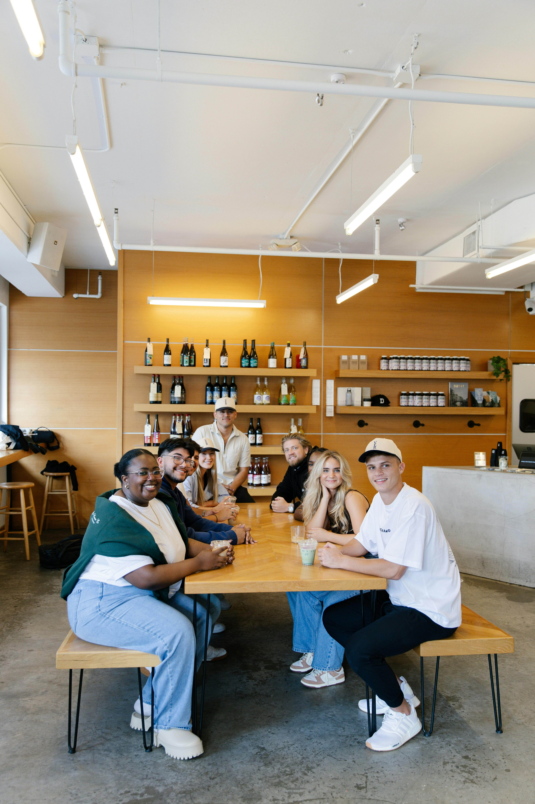

A propos
Vamatcha est née d’une passion commune pour le thé matcha et d’une belle amitié. En 2022, trois amis aux talents et parcours variés ont décidé de se réunir autour d’un projet ambitieux : partager l’art et les bienfaits du matcha avec le plus grand nombre.Tout a commencé lors de conversations animées autour d’un bol de matcha, où nous rêvions de partager cette boisson si spéciale avec le plus grand nombre. Nous étions fascinés par ses saveurs délicates, ses bienfaits pour le corps et l’esprit, mais aussi par la sérénité qu’elle inspire. Très vite, l’idée a germé : créer un projet qui marierait respect des traditions japonaises et modernité.
Tout a commencé lors d’un voyage inspirant au Japon, où nous avons découvert le rituel du thé matcha, une tradition empreinte de sérénité et de respect. Fascinés par ce savoir-faire ancestral, nous avons voulu l’adapter à notre époque tout en respectant ses origines. C’est ainsi que Vamatcha a vu le jour, portée par l’envie de démocratiser cette boisson exceptionnelle.

Depuis le début, notre vision reste la même : proposer un matcha de qualité irréprochable, respectueux de l’environnement et des artisans qui le cultivent. Nous croyons fermement en l’idée que le thé peut rassembler, apaiser et inspirer, tout comme il a uni notre trio. Avec Vamatcha, savourez bien plus qu’une boisson : découvrez une histoire d’amitié, de passion et d’excellence.